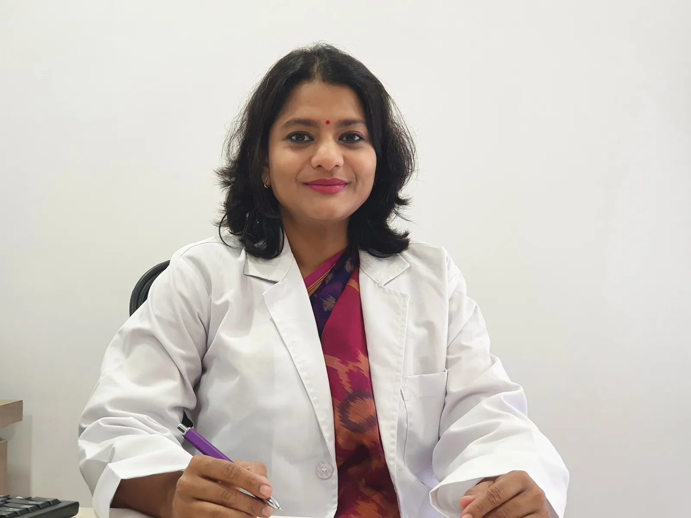

Two eyes. One clear picture.
Paediatric eye care and squint treatment for children and adults, by Dr. Aloka Hedau in Kukatpally, Hyderabad.
మీ పిల్లల చూపు, మా బాధ్యత


Scroll to look through the eyepiece
Illustrative 3D images
When one eye turns, the brain gets two pictures.
A squint (crossed eyes) means the eyes point in different directions. Treated early, ideally before age 8, a child can learn to see with both eyes together.
- Squint surgery for children and adults
- Non-surgical options too: vision therapy and orthoptic assessment
Two picturesOne picture
A lazy eye sends a blurred picture.
In amblyopia one eye sees less clearly, so the brain starts to ignore it. Therapy trains that eye to work again, and the two pictures meet.
- Bynocs binocular vision therapy
- Orthoptic and binocularity assessment

Two picturesOne clear picture
Far things blur first.
With myopia the board, the bus number and the sky go soft. Children rarely say so: they squint, sit closer or lose interest in class.
- Myopia control to slow the change
- Eye length tracked year to year with the Pristine OBM 12

Far away is blurredNear and far, clear

Dr. Aloka Hedau
DNB (Ophthalmology) · Fellow, Paediatric Ophthalmology · FICO (UK)
Senior Paediatric Ophthalmologist and Adult Strabismus Surgeon with over 20 years of focused experience. Parents describe her as kind, patient with children, and someone who listens.
- Post-graduation and fellowship at Aravind Eye Hospital, Madurai
- Nystagmus surgery training with Dr. Richard Hertle
- Affiliated with Rainbow Hospitals, Apollo Cradle, Little Star and Win Vision
Your first visit, step by step.
Four simple steps, the same for children and adults. Watch them play, or tap a step.

Vision check
How clearly each eye sees, near and far, with picture charts for children too young to read letters.
Specialist care, from babies to adults.
Therapy first wherever it can work. Surgery only when it is the right answer.
Squint surgery
For children and adults, including paralytic squint.
Vision therapy
Training both eyes to work as a team.
Paediatric eye evaluation
Gentle, thorough checks for babies and children.
Retinopathy of Prematurity
Screening and care for premature babies.
Myopia control
Slowing short-sightedness as children grow.
Special children
Cortical visual impairment, low vision aids and vision rehabilitation.
Inside the clinic.
A calm, child-friendly space with modern diagnostics and its own operation theatre.


What families say.
From Google reviews of the clinic.
“My entire family consults Dr. Aloka, which includes my kids, mother and mother-in-law.”Priyanka Malhotra
“Dr. Aloka Ma’am is very kind and helpful. She listens to the parents with all the empathy.”Pratiksha Tripathi
“Dr. Aloka is very approachable and patient with the kids.”Prashant Saddi
Let's bring both eyes together.
Book a check-up for your child, or for yourself. Open Monday to Saturday, 10 am to 5 pm.
Visit us
- Address
- Third Floor, Plot no 6, 9th Phase Road, near Forum Srujana Mall, KPHB Phase 6, Kukatpally, Hyderabad 500085
- Hours
- Monday – Saturday, 10 am – 5 pm · Sunday closed
- Contact
- +91 74164 27503 · dralokaseyecare@gmail.com